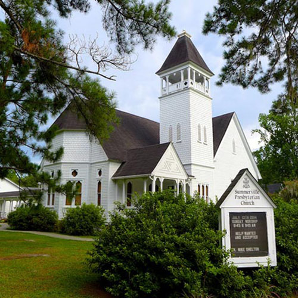

Summerville Presbyterian Church
About the church
We are a Christ-centered church which values an open and friendly congregation that is dedicated to spiritual growth of all God's children and is called by God's Spirit to serve our neighbors, locally and globally.

Date & Time
The ceremony will take place on March 21, 2015 at 5:00 PM